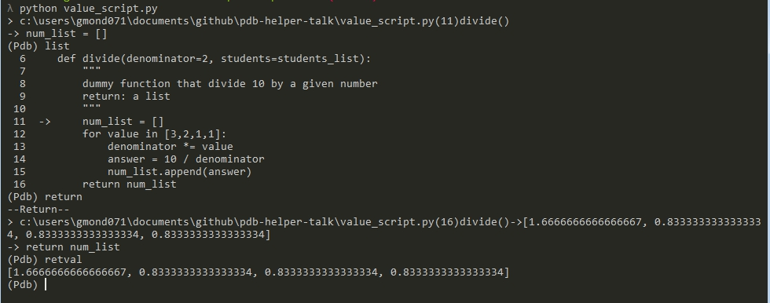

PDB
Getting started with pdb
Guinsly Mondésir / @guinslym
Msc Information Studies @ UOttawa
UOPy *
github.com/guinslym
linkedin
Overview
- Starting to debug
- Commands
- pdb.methods()
- pdb like packages
- Conclusion
Start the python debugger
python -m pdb script.py
pdb.methods()
Commands
- Where am I? (2 min: script1.py)
- Display value (2 min)
- Navigation (3 min)
- Breakpoints (5 min)
- Shortcuts and advanced commands (5 min)
Where am I? (2 min:script1)
- list
- longlist
- where
- help
- quit
list
longlist
where
help
quit
Display the value (2 min: value_script.py)
- whatis
- p
- pp
- args
- retval
- source
whatis
p
pp
args
retval
source
Workflow (3 min:workflow_script.py)
- next
- until
- step
- continue
- return
- restart
next
until
step
continue
return
restart
restart with args
Breakpoints (5 min: breakpoint_script.py)
- Where
- up/down
- tbreak
- break
- condition
- enable/disable
- ignore
- clear
- jump
- display/undisplay
Traceback
Traceback: Frame
where
up/down
break
tbreak
condition
condition: syntax
- condition [breakpoint number] (expression must be True)
- condition 1 my_integer_variable > 400
- condition 2 my_function(that return True or False)
- etc ...
ignore
enable/disable
Picture(Enable/display)
clear
jump
display/undisplay
Shortcuts and advanced commands (5 min)
- alias/unalias
- commands
- debug
- interact
- .pdbrc (this is a file)
alias/unalias
commands
interact
.pdbrc
Methods
- .run('my.module')
- .runcal(myfunction)
- .set_trace()
- .pm()
- .post_mortem()
post_mortem(traceback)
pdb like packages
- ipdb (pip install ipdb) (MAC/Linux/Windows)
- jupyter notebook (conda install jupyter) (MAC/Linux/Windows)
- ptpdb (pip install ptpdb) (M/L/W)
- wdb (https://github.com/Kozea/wdb) (M/L/W)
- pudb (pip install pudb) (M/L)
- pdb++ (pip install pdbpp) (M/L)
- winpdb (windows) – software (W)
- web-pdb (pip install web-pdb) (M/L/W)
Jupyter notebook
pudb
ptpdb
pdb++

wdb
winpdb

web-pdb
Conclusion: My journey in using pdb
- Save Time
- Easy to use
- Doesn’t have a lot of methods and commands.
- It’s way better if you start learning pdb by not actually debugging.
- Magic function
- Uses a third-party package
- Usage of some pdb like package doesn’t include the same object.methods as pdb.
References
- Python standard library (sys, pdb, traceback)
- Debugging Python code with pdb
- Debugger en Python: les bases de pdb
- Debugging em python (sem IDE)
- DEU ERRO! E AGORA, O QUE EU FAÇO?
- https://github.com/iwanBezdomny/pdb
- http://pybonacci.org/2013/06/14/como-depurar-un-programa-python-con-pdb/
- https://medium.com/instamojo-matters/become-a-pdb-power-user-e3fc4e2774b2#.3ndveubpm
- Roy Hyunjin Han: Debugging Tips and Tricks - PyCon APAC 2016
- Déboguer Python avec PuDb